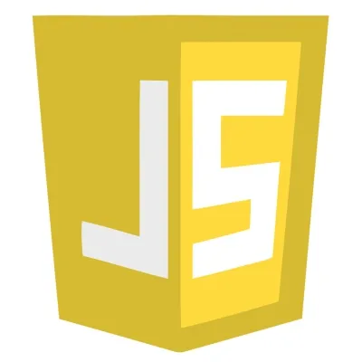
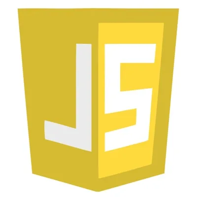
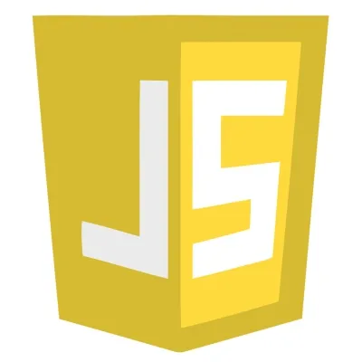

Tecnologias

 

Mi nombre es Alejo, tengo formacion como electromecanico, poseo amplia experiencia en instalaciones electricas, mantenimiento industrial y programacion de PLC, hoy en dia me encuentro estudiando para ser un desarrollador Full Stack. Mi experiencia laboral me ha servido para resolver problemas dia a dia, gestionar recursos, calcular tiempos de entrega y a tratar con clientes
ESCUELA TÉCNICA N°2 MERLO
Técnico en operaciones e instalaciones
electromecánicas.
FRIGORIFICO BIOCAM
ING. GASSMANN
Técnico en operaciones de
instalaciones frigorificas
industriales
Curso de refrigeración industrial con NH3
de 30 horas de duración.
ROCKWELL AUTOMATION
SEDE SAO PABLO
Curso básico de PLC Allen Bradley
30 horas de duración.
WEG S.A - CAPITAL FEDERAL
Curso de arrancadores suaves y
variadores de frecuencia 8 horas
de duración
TECNICO DE MANTENIMIENTO JBS Swift – Planta pilar (Abril 2013 – Octubre 2014) Mecánico de sala de maquinas, SCADA, sistema de amoniaco, mantenimiento de compresores a tornillo, automatismos, separadores, mantenimiento y limpieza de condensadores, reparación de bombas de aceite y de recirculado de NH3, mantenimiento de cámaras y túneles. Mantenimiento general de planta, iluminación, armado y modificación de tableros eléctricos, soldadura eléctrica, instrumentos de medición y mecánica ligera.
JBS fue la primer empresa con la que trabaje en relacion de dependencia, entre como electricista de estanterias moviles y mantenimiento edilicio, a los 3 meses me pasaron al area de refrigeracion industrial y sala de maquinas, donde aprendi todo lo relacionado con el mantenimiento de la planta frigorifica, tuve a cargo una instalacion de mas de 24 millones de dolares, y 18.000 litros de amoniaco liquido. Pude aprender sobre seguridad y riesgos de trabajo, electricidad, mecanica y electronica industrial, analisis de fallas, organizacion de prioridades y tiempos, comunicacion asertiva y al trabajo bajo presion.
ELECTRICISTA Freelance Diciembre 2011 – Abril 2013 Y desde Octubre 2014 - Agosto 2015) Oficial electricista en instalaciones domiciliarias, comerciales e industriales. Armado de cañerías y cableado de instalaciones en general, armado de tableros, armado de presupuesto, lectura de planos, colocación de artefactos, motores monofasicos y trifásicos, tableros de mando y automatización con contactores. Trabajos de herrería, albañilería y pintura para el terminado del trabajo.
Este fue mi primer trabajo, aprendi sobre trato con el cliente, manejo de personal, costos y tiempos de entrega, cooperacion con otras areas, seguridad e higiene laboral, entre otras cosas
TÉCNICO DE SERVICIO Mayekawa Argentina S.A (Octubre 2015 - Noviembre 2016) Técnico de servicio de equipos e instalaciones de refrigeración. Reparación integral de compresores a tornillo y alternativos, puesta en marcha instalaciones frigorificas. Paquetizacion del equipo en planta. Uso de instrumentos de presición, alineación de motores, arrancadores suaves, variadores, PLC y electricidad en general.
Mayekawa argentina es una empresa japonesa fabricante de compresores de gases para industrias frigorificas, petroleras, petroquimicas y de gases insutriales y medicinales, aprendi muchos conceptos tecnicos, aqui pude realizar un curso de programacion de PLC basico realizado en San Pablo, Brasil y uno de arrancadores suaves y variadores de frecuencia en WEG S.A. Aqui pude demostrar mi excelente trato con el cliente, mi capacidad para resolver fallas rapidamente, la adaptabilidad a los diferentes clientes y rubros con los que se trabajaban y el trabajo en equipo al momento de sacar los trabajos adelante.
TECNICO DE MANTENIMIENTO Centro de distribución Carrefour (Febrero 2017 - Mayo 2021) Tecnico de mantenimiento electromecanico. Mantenimiento y operación de central de frio, sistema de NH3-CO2, compresores a tornillo, PLC, variadores, central de incendio, grupos electrogenos, mecánico de apiladoras, autoelevadores y zorras electricas. mantenimiento edilicio, climatizacion y electricidad en general.
El centro de distribucion de Carrefour fue la primer instalacion frigorifica en Argentina en usar un sistema de NH3- CO2 (Amoniaco- Dioxido de Carbono), un sistema mas seguro por cuestiones ambientales y de continuidad de los procesos en casos de fuga, pero mas riesgoso por cuestiones de la alta presion con la que se trabaja el CO2. La importancia de los conocimientos tecnicos son importantisimos a la hora de resolver problemas en este tipo de instalaciones. Mi facilidad y vocacion por enseñar fueron de gran ayuda a la hora de mantener en condiciones la instalacion y en la resolucion de problemas via telefonica en horarios en los que no estaba en planta. Aqui tuve uno de los mejores equipos de trabajo.
TECNICO ELECTROMECANICO Facility Service (Noviembre 2021 - Marzo 2022) Técnico de servicios de mantenimiento para concesionarias y oficinas de Kavak.com, mantenimiento edilicio, electricidad, sanitarios y aire acondicionado
Facility service es una empresa que terciariza servicios de mantenimiento, aqui tuve a cargo el mantenimiento de consecionarias y oficinas de administracion de Kavak.com, tenia a cargo 7 sucursales y un edificio de 24 pisos ubicado en el centro de la ciudad de Buenos Aires, realizaba seguimiento y control de las instalaciones, armaba listado de materiales y realizaba compras para realizar los trabajos en el dia a dia. Organizaba los tiempos y prioridades de cada sucursal, la iniciativa y comunicacion fueron claves en este puesto.
